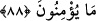

“KALBLERİMİZ PERDELİDİR”
DİYENLER
87. Andolsun biz Mûsa’ya Kitab’ı verdik. Ondan sonra ardarda peygamberler
gönderdik. Meryem oğlu Îsâ’ya da mûcizeler verdik. Ve onu, Rûhu’l-Kudüs
(Cebrâîl) ile destekledik. (Ne var ki) gönlünüzün arzulamadığı şeyleri söyleyen bir
elçi geldikçe, ona karşı büyüklük tasladınız. (Size gelen) peygamberlerden bir
kısmını yalanladınız, bir kısmını da öldürdünüz.
88. (Yahûdîler peygamberlerle alay ederek) “Kalblerimiz perdelidir” dediler.
Hayır, küfür ve isyanları sebebiyle Allah onlara lâ’net etmiştir. O yüzden çok az
inanırlar.
( __WORD__ ) tabiri “birini takip ettiği” zaman kullanılır. Burada mânâ; “Mûsâ’dan sonra
sırayla birbirlerini ta’kîb eden peygamberler gönderdik” demektir. Bu peygamberler de;
Yûşa, Şumûyil, Dâvud, Süleymân, Şem’ûn, Şu’yâ, İrmiya, Uzeyr, Hizakyel, İlyas,
Elyesa, Yûnus, Zekeriyyâ, Yahyâ ve diğerleridir.
“Meryem oğlu Îsâ’ya da mûcizeler verdik” Îsâ’nın süryanicesi “Yesû” dur.
“Mübârek” demektir. Sahîh olanı şu ki: Bu ve benzeri kelimelerin Arapça iştikakı
(türevi) yoktur. “İbn” ( __WORD__ ) kelimesinin başındaki hemze iki özel isim arasında
geldiğinde düşmekle beraber, bu kelimenin anneye nisbeti nadir olması hasebiyle
burada düşmemiştir. “Meryem” Süryânîce “hizmetçi” ve “köle” mânâsına gelir. Annesi,
Hz. Meryem’i mâbedin hizmetine verdiği ve onun Allah’a olan yüksek ibâdetinden
dolayı Cenâb-ı Hak da onu Kur’ân’da bu isimle nebilerle beraber yedi kez zikretmiş ve
nebîlere hitâb ettiği gibi, ona da hitâb etmiştir. Meselâ: “Ey Meryem, Rabbine
ibâdetine devam et, secde et ve rükûa gidenlerle beraber sen de rükûa git!” (Âl-i
İmrân, 3/43) derken onu erkeklerle bir tutmuştur.
“Beyyineler”den yâni mûcizelerden maksad, ölüleri diriltmek, körlere ve ala
tenlilere şifâ vermek, gaybî bir takım haberler vermek ve İncil gibi açık mûcizelerdir.
“Ve onu Rûhu’l-kuds ile kuvvetlendirdik.” cümlesindeki “Rûhu’l-kuds” terkîbinde